Префектура Оита · Юфуин · рёкан
Yufuin Tamanoyu и STAY Tamanoyu: рёкан в рукотворном лесу и дом, чтобы пожить в Юфуине
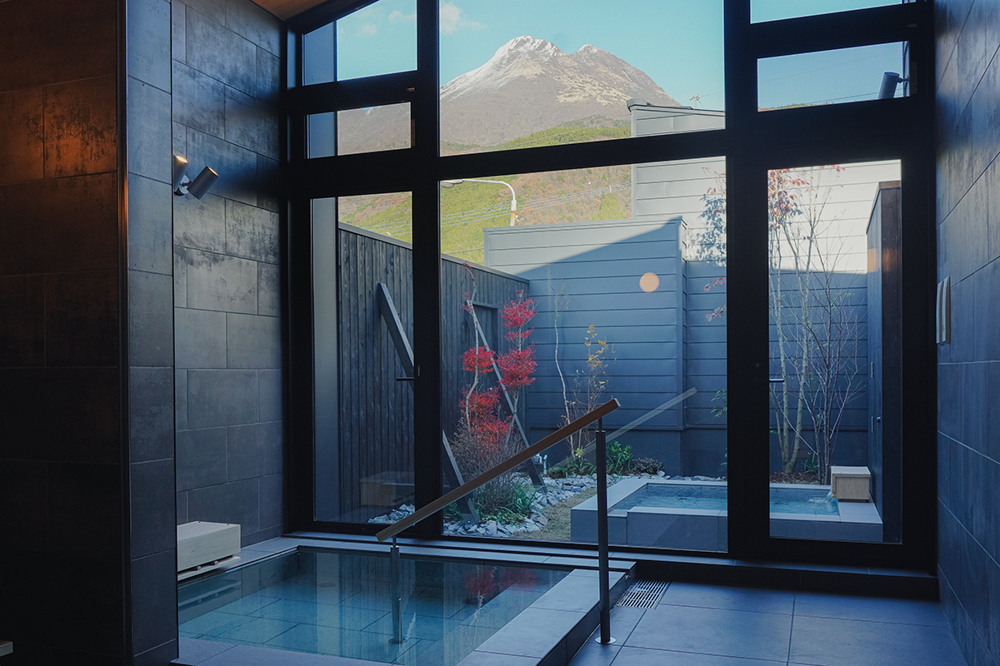
Юфуин, онсэн у подножия горы Юфу, привыкли считать местом дорогих рёканов на одну ночь. Один из самых известных среди них, Yufuin Tamanoyu, предлагает другой способ: остаться надолго и пожить здесь так, как живут местные.
Рёкан
Yufuin Tamanoyu: лес на месте рисового поля
Когда говорят об онсэне Юфуин, многие сразу вспоминают три рёкана, которые называют его «большой тройкой»: «Камэ-но и бэссо», Yufuin Tamanoyu и «Сансо Мурата». Мало кто знает, что все три начинались как загородные дома, куда приезжали неспешно отдохнуть и подлечиться. Суть с тех пор не изменилась, но слава дорогих рёканов сделала их в глазах многих недоступными.
Yufuin Tamanoyu основали в 1953 году как дом отдыха при дзэн-храме. В 1966 году к управлению присоединился отец нынешней хозяйки. Участок тогда был рисовым полем: его засыпали и сажали деревья одно за другим, пока не вырос смешанный лес. Сегодня около гектара земли покрывает густая роща, и пение птиц слышно во всех 16 номерах, соединённых крытыми галереями. Желание сделать Юфуин зеленее унаследовала его старшая дочь, нынешняя глава рёкана, и деревья на участке сажают до сих пор.
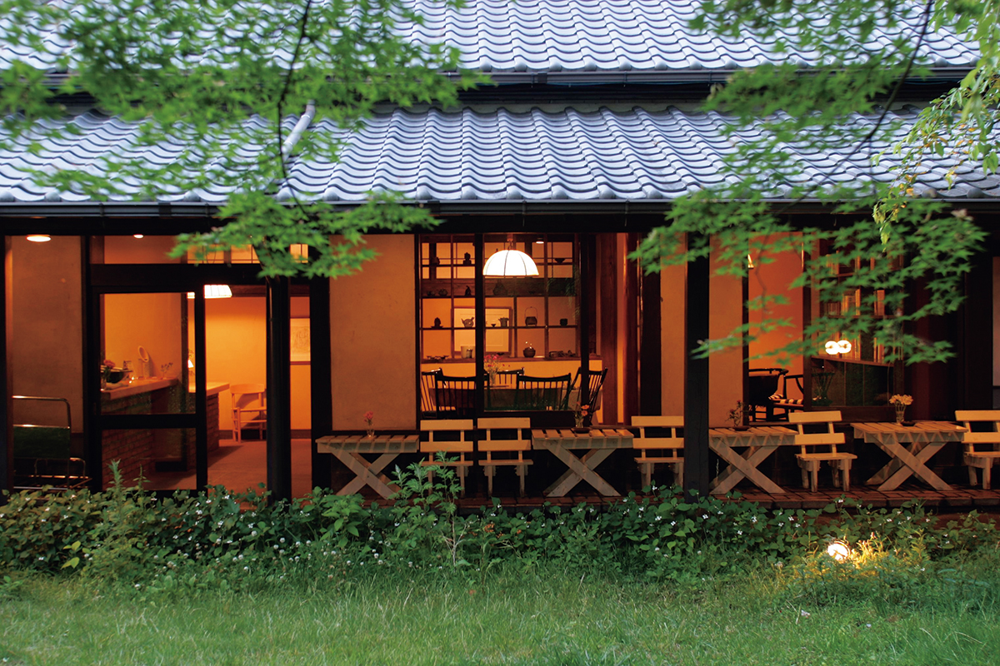
Корни дома отдыха чувствуются и в кухне. Её строят на мысли, что гость должен отдохнуть телом и набраться сил, поэтому овощей в блюдах много, и всё устроено так, чтобы есть можно было вкусно и вдоволь. На ужин выбирают одно из пяти основных блюд.
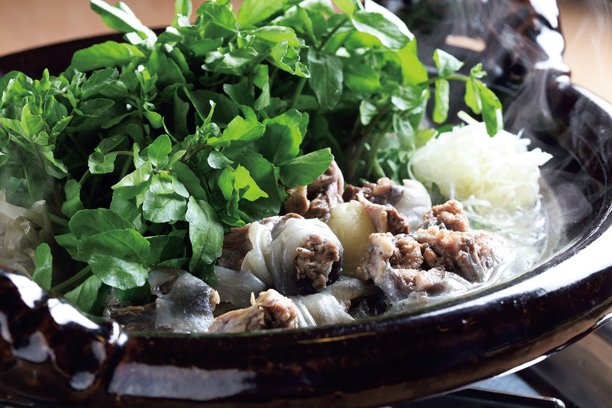
Yufuin Tamanoyu
- Адрес
- префектура Оита, город Юфу, Юфуин-мати, Кавками, 2731-1
- Телефон
- +81 977-84-2158
- Цены / Вход
- от 42 050 иен за ночь с завтраком и ужином, с налогом и сервисным сбором
- Сайт
- tamanoyu.co.jp
Новое
STAY Tamanoyu: между жизнью и путешествием
Глава рёкана давно хотела сделать то, чего нельзя сделать в самом Yufuin Tamanoyu. Так в январе 2024 года открылся STAY Tamanoyu, дом для долгого проживания. При открытии здесь можно было жить от трёх ночей до месяца. Утром приносят хлеб и кофе, а ужин каждый решает сам: в доме есть кухня, и простую еду можно приготовить своими руками.
Это что-то среднее между поездкой и жизнью на новом месте: днём гуляешь, вечером идёшь в онсэн и понемногу приходишь в себя. У части сотрудников есть квалификация сиделки или медсестры, а по соседству работает клиника внутренних болезней, так что спокойно могут приехать и те, у кого есть хронические болезни или просто нет уверенности в своём здоровье. Переехать на онсэн насовсем получается не у всех, а такой дом даёт ощущение второго жилья, куда можно возвращаться.
Номера на разный лад
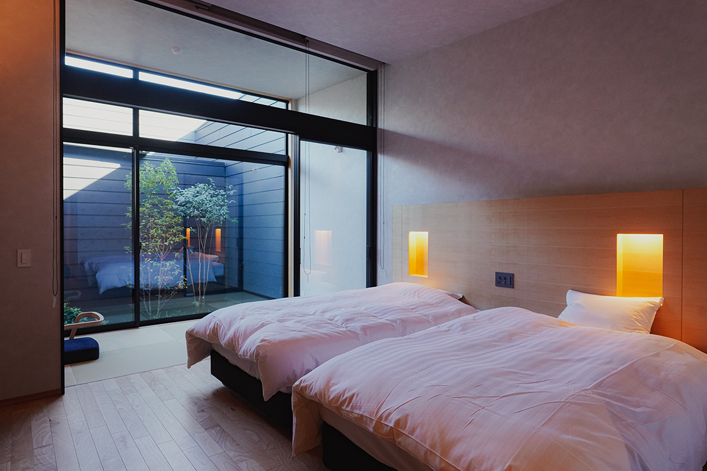
Номера отличаются планировкой, и выбирать их стоит по тому, как вы любите жить. В одних кровать поставлена так, чтобы лёжа смотреть на гору Юфу. В люксах гостиная с большим обеденным столом отделена от спальни, так что отдых и повседневные дела не смешиваются.
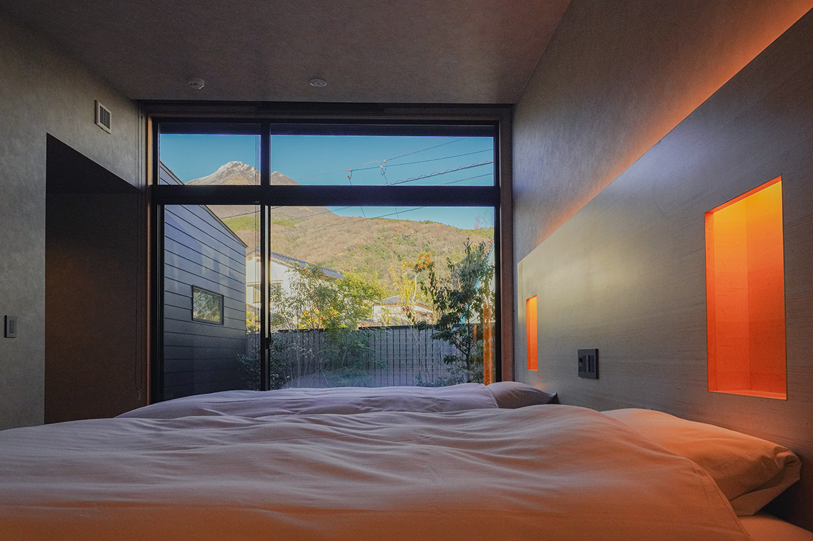
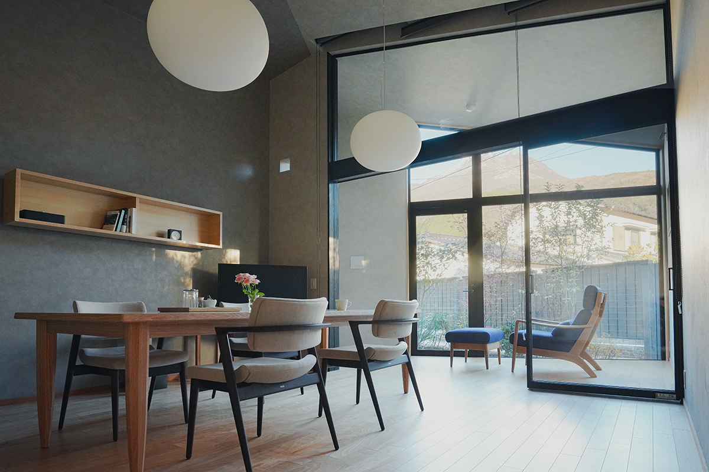
Лаунж с кухней
В номерах есть только микроволновка и холодильник. Морозилка и кухонная утварь ждут в общем лаунже, и за готовкой здесь легко разговориться с соседями.
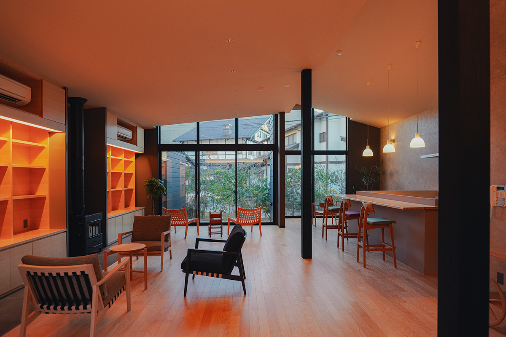
Юфуин подходит для такой жизни, потому что людей, которые здесь постоянно живут, в нём много. Город издавна принимал самых разных приезжих. Во время прогулки можно заглянуть в лавки с хорошими вещами, и рассчитаны они скорее не на туристов, а на местных, которые любят свой город. Вечером вино с вкусным сыром, утром любимые зёрна в ручной мельнице, потом бокал в знакомом баре: так онсэн становится местом, где живут, а не только ночуют.
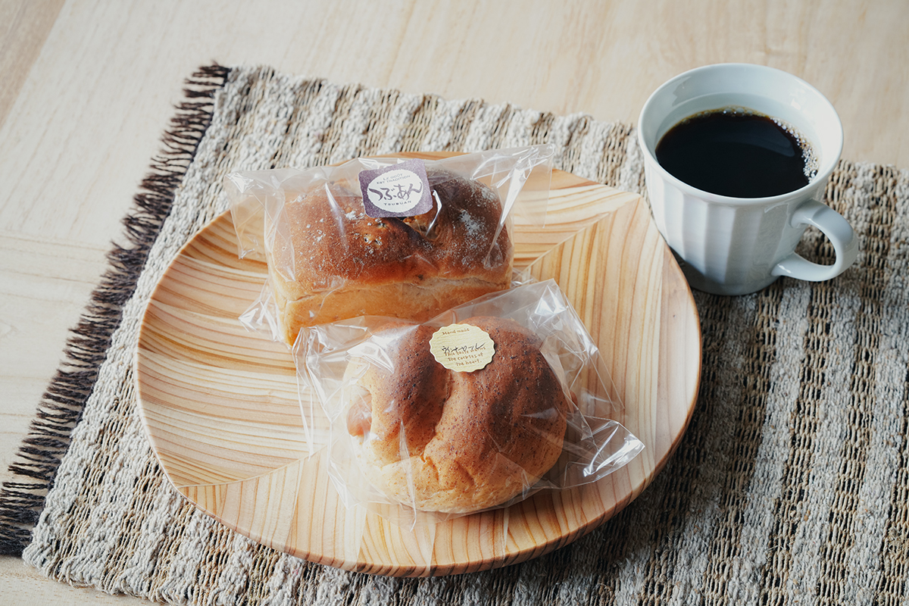
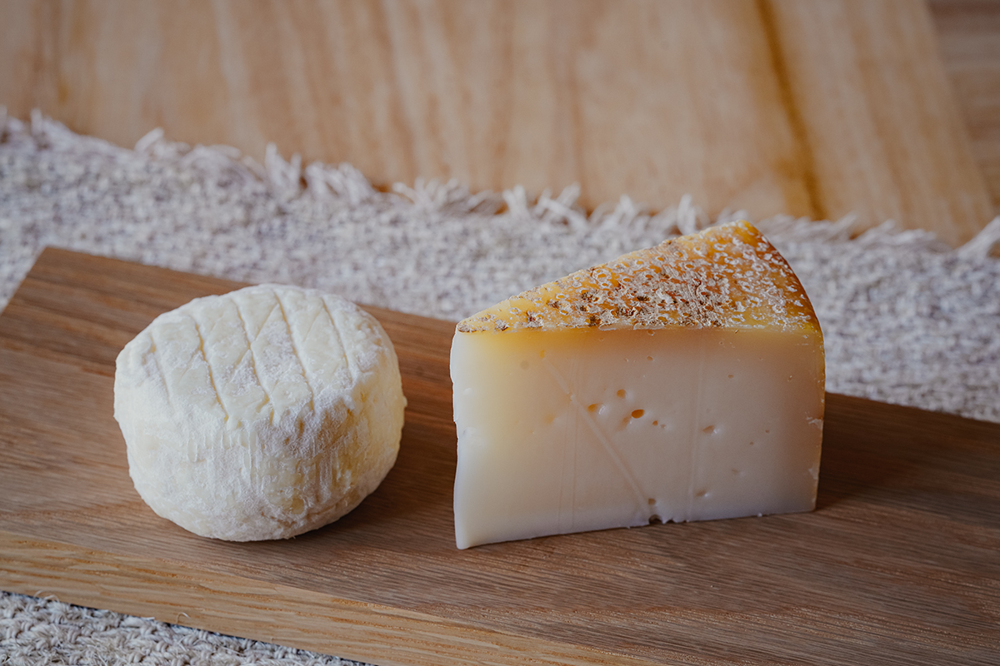
Всё, что есть у рёкана
Гости STAY Tamanoyu пользуются и Yufuin Tamanoyu: большой купальней, баром и магазином. Ресторан рёкана Budouya доставляет еду в дом, а можно прийти туда самим и заказать то же, что подают гостям рёкана.
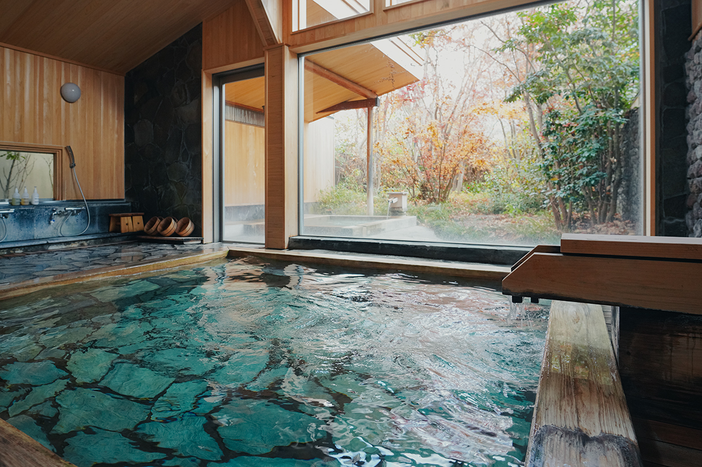
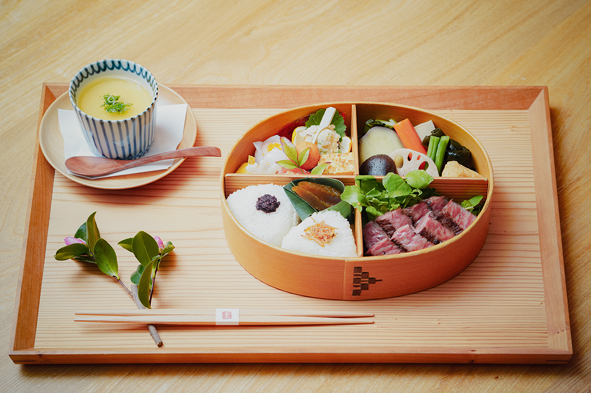
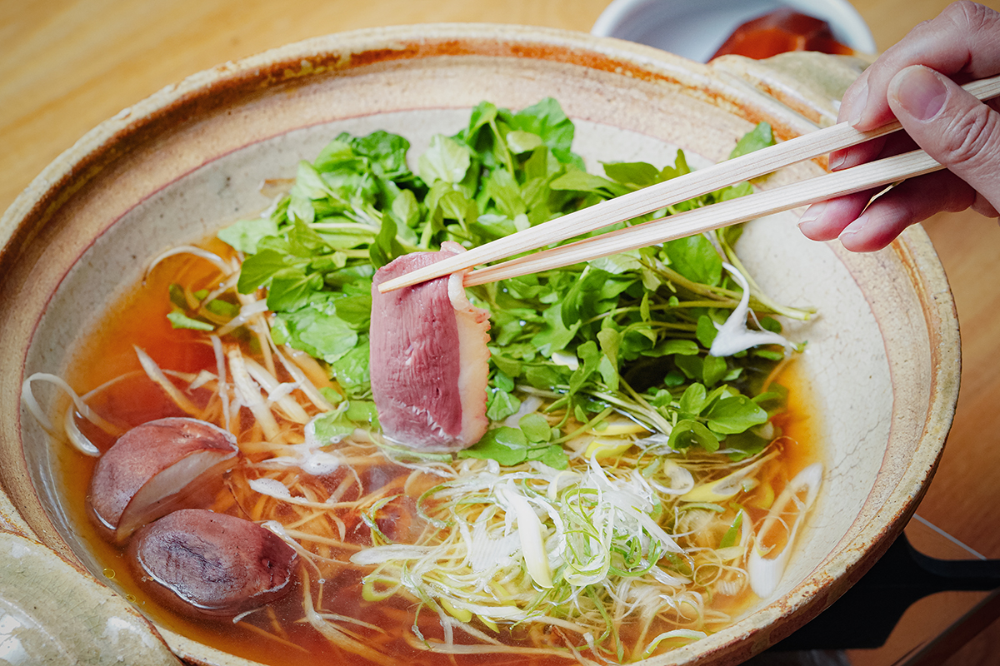
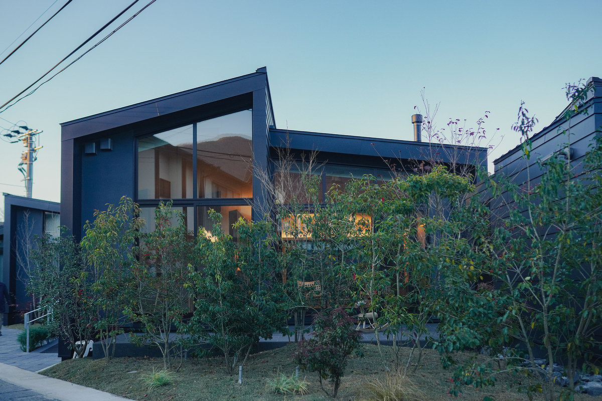
STAY Tamanoyu
- Адрес
- префектура Оита, город Юфу, Юфуин-мати, Кавками, 2711-1
- Телефон
- +81 977-85-8717
- Цены / Вход
- от 20 500 иен за ночь с налогом и сервисным сбором (от трёх ночей)
Местное
Что советует рёкан
Хороший рёкан знает свой край лучше любого путеводителя. Вот три местные вещи, которые советует Yufuin Tamanoyu.
Кофе «Кохи Мокуба»
Первая рекомендация: зёрна из «Кохи Мокуба», кофейни, которую в Юфуине любят местные. Рёкан советует сезонную смесь и фирменную смесь, которую готовят с открытия кофейни в 1977 году. Говорят, кофе здесь похож на вино: у каждой чашки свой характер, в зависимости от происхождения зёрен и аромата. Зайти в саму кофейню тоже стоит, чтобы ненадолго передохнуть.
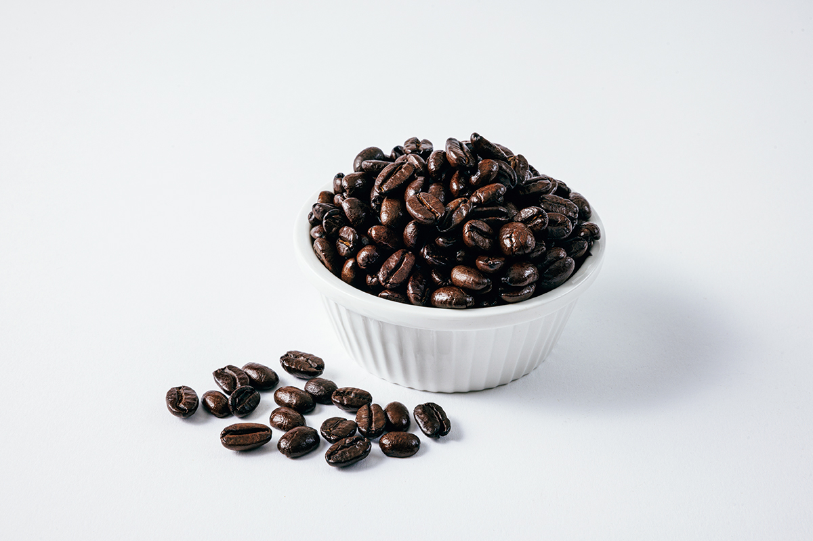
Обжаривают по старинке, на немецком ростере, который работает без компьютера. Достаточно рассказать о своих вкусах, и хозяин подберёт зёрна и пришлёт их свежеобжаренными. Пачка в 100 г стоила 800 иен в 2025 году.
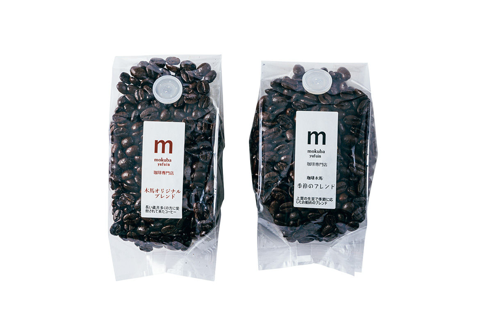
«Кохи Мокуба»
- Телефон
- +81 977-85-3385
- Цены / Вход
- сезонная и фирменная смеси, 800 иен за 100 г
Бамбуковая корзина Beppu Craft
Такие корзины стоят в номерах рёкана, и многие постоянные гости покупают их в подарок. Вещь простая, но, раз попробовав, расставаться с ней не хочется. В корзину можно сложить письма, фотографии или книги, и она сразу украсит комнату.
Плетут её из бамбука мадакэ: из стеблей вытапливают масло и сушат их на прямом солнце, такой бамбук называют белым. На поверхности готовой корзины нет узлов. Со временем она всё лучше ложится в руку и темнеет до янтарного цвета.
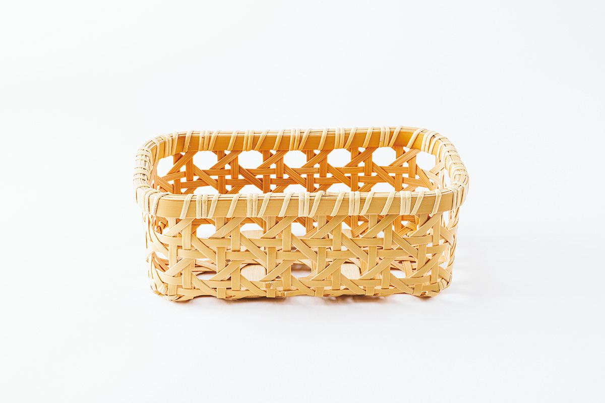
Юдзу-нэри от рёкана
Юдзу-нэри издавна подают в Юфуине к чаю. Это сладость из цитруса юдзу. В Yufuin Tamanoyu с плодов глубоко срезают кожуру, и после варки вкус получается мягким. Баночка стоила 450 иен в 2025 году, её можно заказать с доставкой.
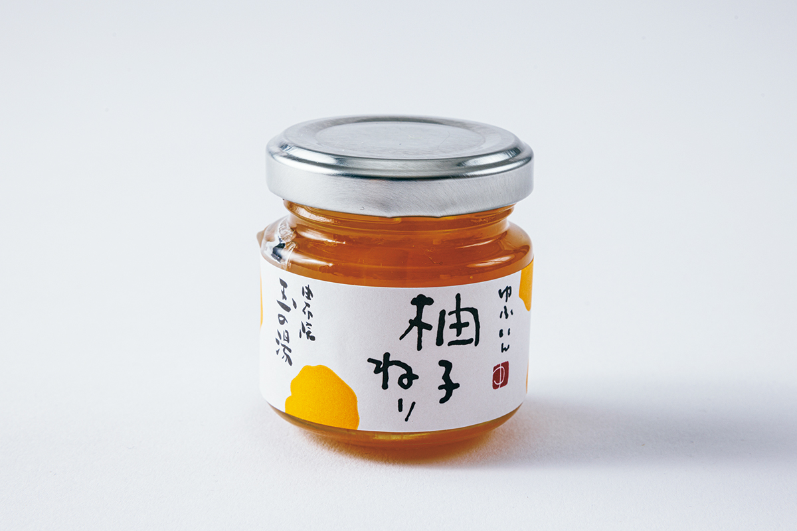
Фото: Адзуса Сигэнобу, Симпэй Фукадзава.